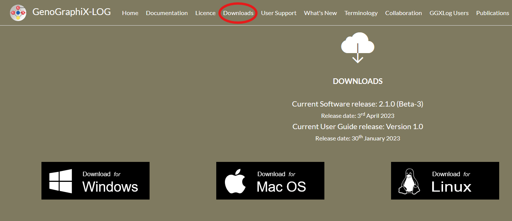
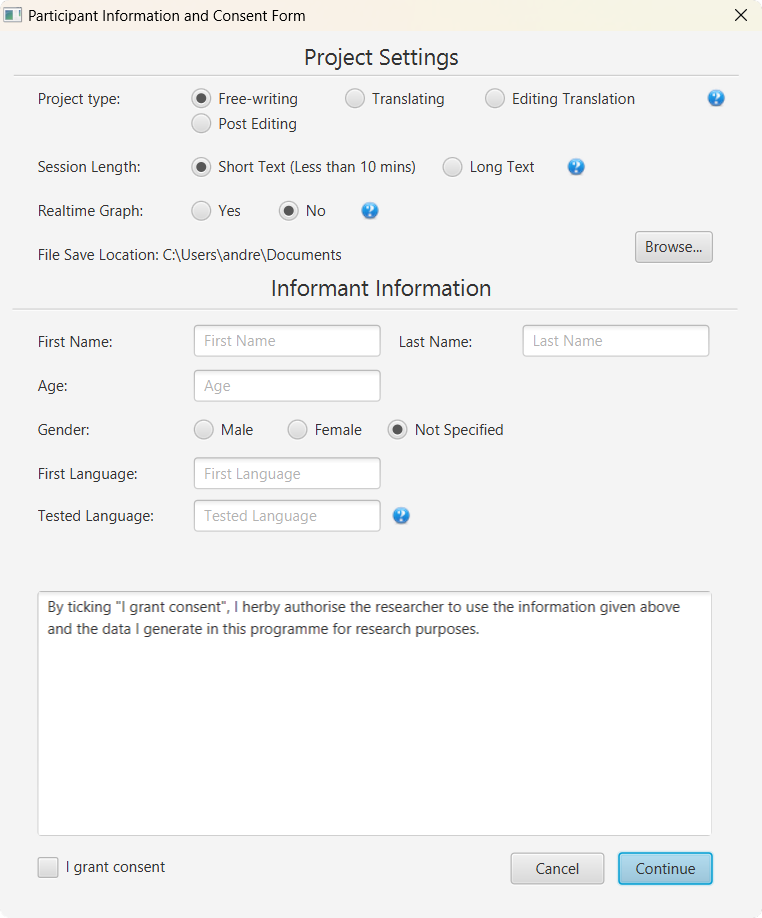
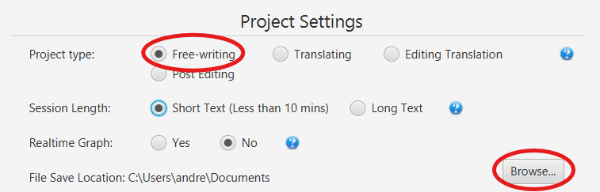
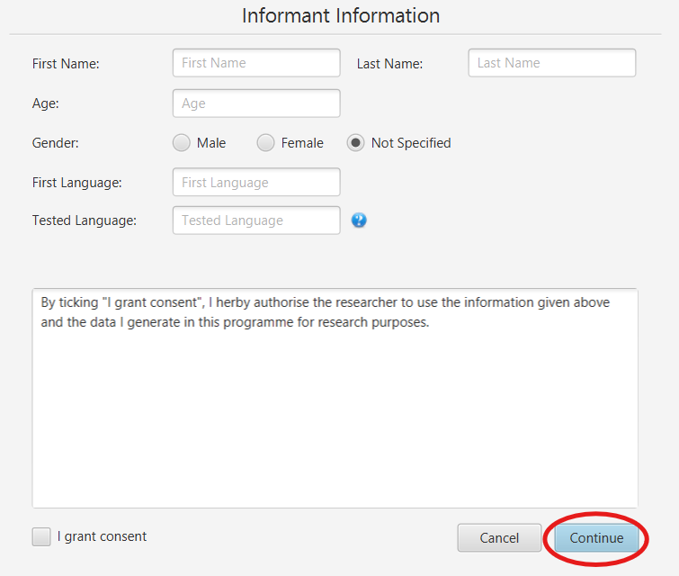
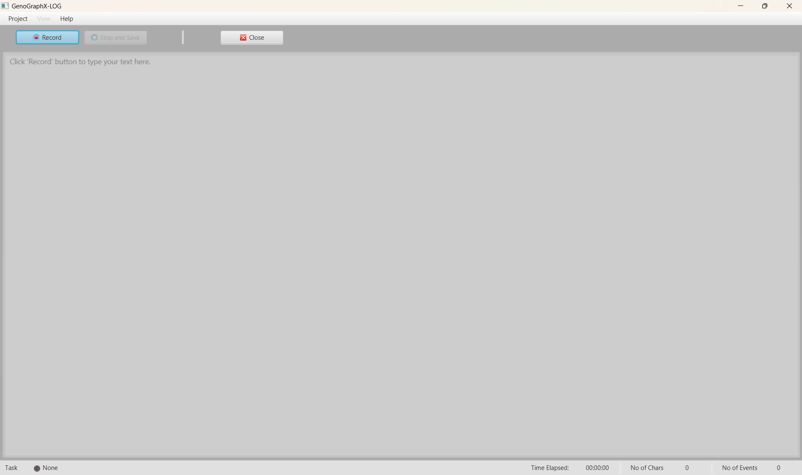
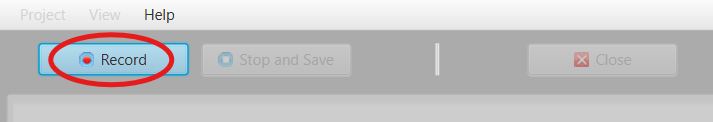
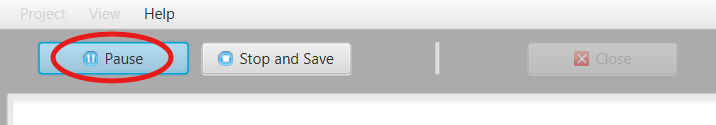
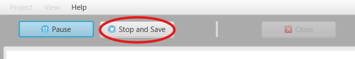
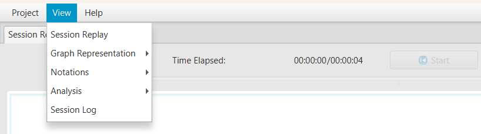

How to write a text with GenoGraphiX-LOG
In this short guide I will teach you how to write a text in the keystroke logging software GenoGraphiX-LOG. I will also give a short primer on how to prepare for the analysis of your writing session at the end of the guide.
Before I start with the guide itself, I will begin with a short introduction to what kind of software GenoGraphiX-LOG is and why you might want to use it. Go to the section How to start writing if you want to go straight into how to use the program.
What is GenoGraphiX-LOG?
GenoGraphiX-LOG (GGXLog) is a program that records your keystrokes as you type on your keyboard. This type of program is usually called a keystroke logging program. You might be familiar with keyloggers as malicious software used to steal confidential information. A hacker might use a covertly installed keylogger on a victims computer to steal their login information. GGXLog is not and cannot be used for malicious purposes. Instead, GGXLog is primarily used for writing research. It is the software I used to investigate the writing processes of high school students, and when I explored how academics used AI-assistance.
When you use GGXLog to write a text, it records each keystroke you pressed when writing. GGXLog then compiles and stores the data as a log file.
As an example, here is the log for “GGXLog records each keystroke” from the previous sentence in a spreadsheet:
The sheer amount of data that keystroke logging provides from writing a very short sentence becomes clear in this example. However, GGXLog also offers several features for analysis because of the inaccessible format of the log. Furthermore, the log can also be loaded into statistical software.
Why use a keystroke logger?
Beyond recording what key you press on the keyboard, it also records when you press the key. This gives you the pause length between each character, word, sentence, and paragraph of your text. The length of the pause as well as where the pause occurs can tell you a lot about writing processes:
- Longer pauses between characters can indicate spelling difficulties (orthographic processing).
- Longer pauses between words can indicate struggling to think of a word (lexical retrieval).
- Longer pauses between sentences can indicate planning of the next sentence or evaluation of the previous sentence (higher-order processing).
- Longer pauses between paragraphs can indicate organizing the overall text (also higher-order processing).
These processes are cognitive—that is, they indicate some mental activity. Cognitive processes are typically indicated by pauses above 2 seconds, what is called a cognitive pause. So a pause above 2 seconds within a word might be indicative of spelling difficulties.
Additionally, cognitive processes are not the only type of writing process you can investigate with GGXLog. Pauses can say a lot of things, but deletions are also recorded since keystroke loggers record every pressed key (including backspace and selections with the mouse). We can therefore see changes in the texts, what are called revisions, making the text’s evolution over time visible.
Who should use a keystroke logger?
There are many different reasons to write with a keystroke logger, and many different people that would find it useful.
Researchers have used keystroke logging to study different peoples writing processes for some time now.
Teachers can use keystroke logging to get a better view of student’s writing abilities and their progress. I investigated its use for teachers to gain a more nuanced perspective of their students’ performances on tests.
Clinicians can use keystroke logging to detect writing difficulties caused by neuropsychiatric disorders. Recent studies have shown keystroke logging as a useful tool to detect early stages of dementia.
Students or writers of any type might want to know more about how they write texts themselves. This can include what they struggle with, how much their text evolves over time, or what their writing process looks like.
How to start writing
Now you know what a keystroke logger is and who might want to use it and what one would use it for. In this section I will cover how to use GGXLog to write a text, and prepare the analysis of the writing session.
Step 1: Installing the program
To write using GGXLog, you first need to have the program installed on your computer. You can download GGXLog at the website ggxlog.net. Go to the “Downloads” section on the website and download the version for your operating system.
{kind=link}
You will have to register to download the program. You do this by entering your name, email, country, as well as eventual university affiliation and research project. You do not have to give accurate information, and you will be able to download the program immediately after registering.

Step 2: Creating a new project
When you have GGXLog installed, you will have to start a new project. To do this, open the program and navigate to the top bar and press “Project”, and then “New”.
A window will appear with two subsections. One subsection is called “Project Settings” and another subsection is called “Informant Information”.
{kind=link}
The project settings section includes settings for your project, such as the previously mentioned project types, the expected session length if you want a real time graph, and where you want to save your project
For a project where you write a text such as an essay, short story, or another similar text, you should select “Free-writing” as the project type. The “Session length” setting is only relevant if you want to display the real-time graph when you write. Select “Long text” unless you know that your writing session will last for less than 10 minutes. To choose where to save your project folder, press the brows button by the “File Save Location” setting.
{kind=link}
The informant information section is for research purposes. In this section, the participant can provide general demographic information. It also contains an informed consent form for the participant.
When you are done setting up your project, press “Continue” at the bottom right of the window to create the project.
{kind=link}
Step 3: Start writing
Now you will be presented with the writing interface consisting of a few buttons, and the text editor where you will write your text below the buttons.
{kind=link}
To begin the writing session press the button called “Record”. The text editor will unlock and turn white, which means that are able to start writing your text.
{kind=link}
When you have started the writing session and are recording, what previously was the record button will become a pause button. Pressing the pause button will pause the recording and the text editor will be locked again.
{kind=link}
When you have finished your writing session press “Stop and Save” to stop the writing session and save your session. You will be asked to confirm your choice. When confirmed, the program will tell you where the project was saved, which will be the destination you chose when setting up the project.
{kind=link}
Now you know how to create a project and write a text using GGXLog. Next we will look at how to analyze the keystroke log.
Analyzing a writing session
You can analyze the writing session when you are done writing and have saved it. To analyze the text you need to open it in GGXLog. To do this, click “Project”, then “Open” and navigate to where you saved your project.
Open the project folder, then select the file called “Session_log.log” and press “Open” or double click the file. The folder probably has a name consisting of a string of numbers
Now you will see that a tab called “Session Replay” has opened in GGXLog. In this tab you can watch your writing session, speed it up or down, and navigate through the recording.

The session replay feature can be useful, but does not provide deeper insights than what you can get from screen recordings of writing sessions. To analyze keystroke logging data we need to utilize the tools that GGXLog provides, or upload the logged data to statistical software.
Native analytical features
You can find further analytical features within the “View” dropdown window in the top navigation bar. Here you can find several analytical tools that GGXLog supports.
{kind=link}
How to use these tools will not be covered here, but will be addressed in another guide.
Uploading logging data into statistical software
If you want to conduct an analysis that is not supported by GGXLog, you can upload the log file to statistical software. In this case, you might have to convert the log file into another format.
The following is an example of a python script that converts a log file into a csv spreadsheet:
import csv
import pandas as pd
input_file_path = r'path\to\your\log\file' # This is your GGXLog log file
output_file_path = r'path\to\where\you\want\to\save\your\converted\log' # This will be the output CSV file
with open(input_file_path, 'r', newline='', encoding='utf-8') as tsv_file:
tsv_reader = csv.reader(tsv_file, delimiter='\t')
with open(output_file_path, 'w', newline='', encoding='utf-8') as csv_file:
csv_writer = csv.writer(csv_file, delimiter=',')
for row in tsv_reader:
csv_writer.writerow(row)
print(f"Conversion from TSV to CSV completed. The output file is {output_file_path}.")
You can then open the spreadsheet in your preferred statistical software.